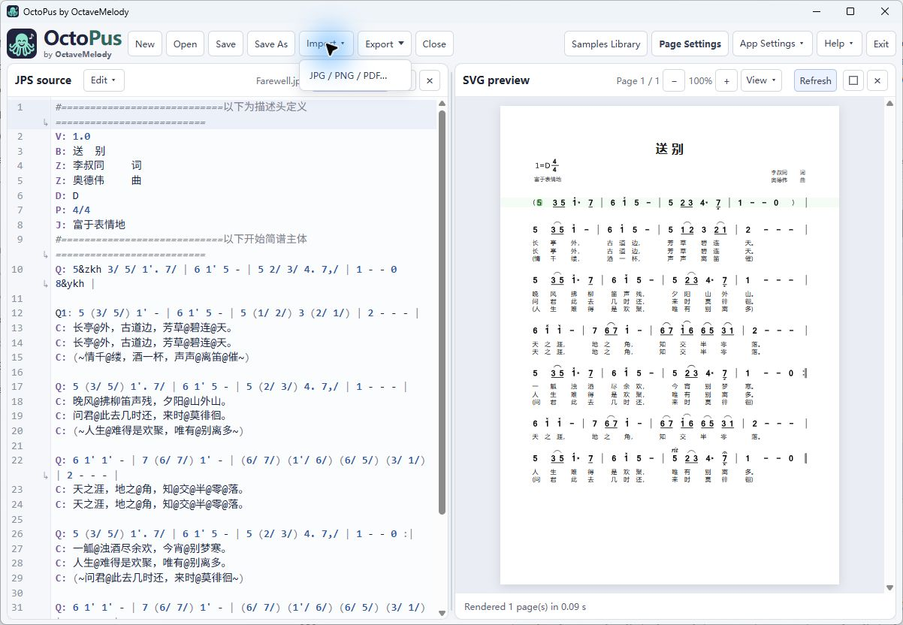
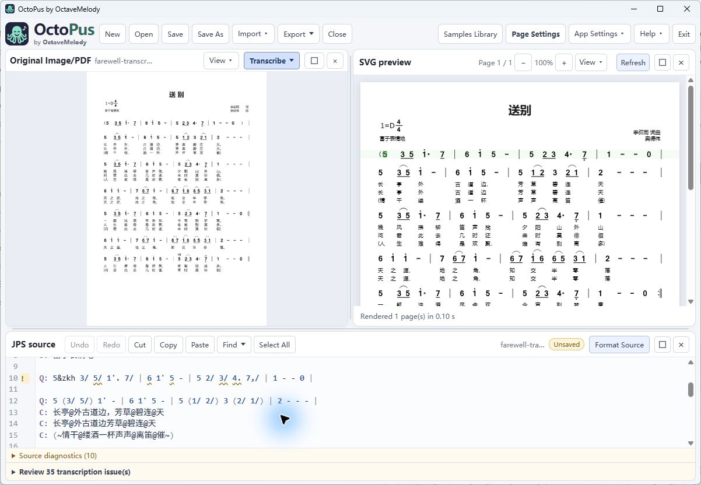
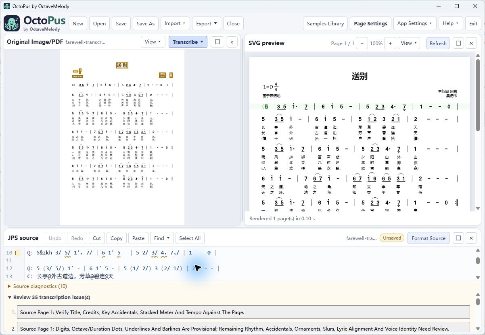
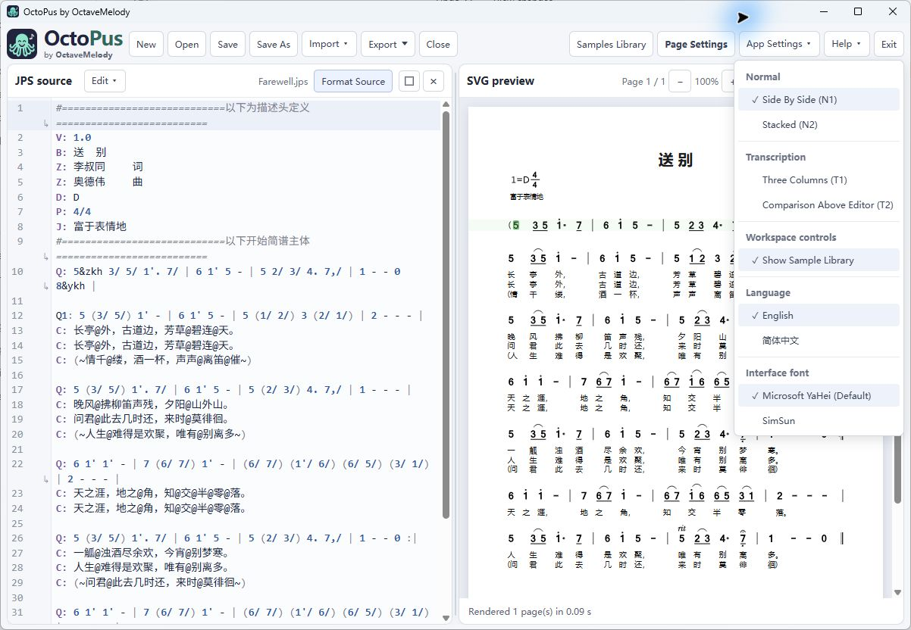
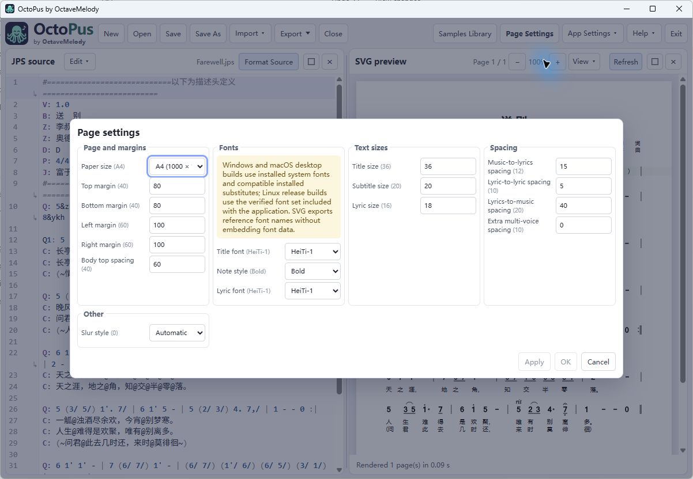
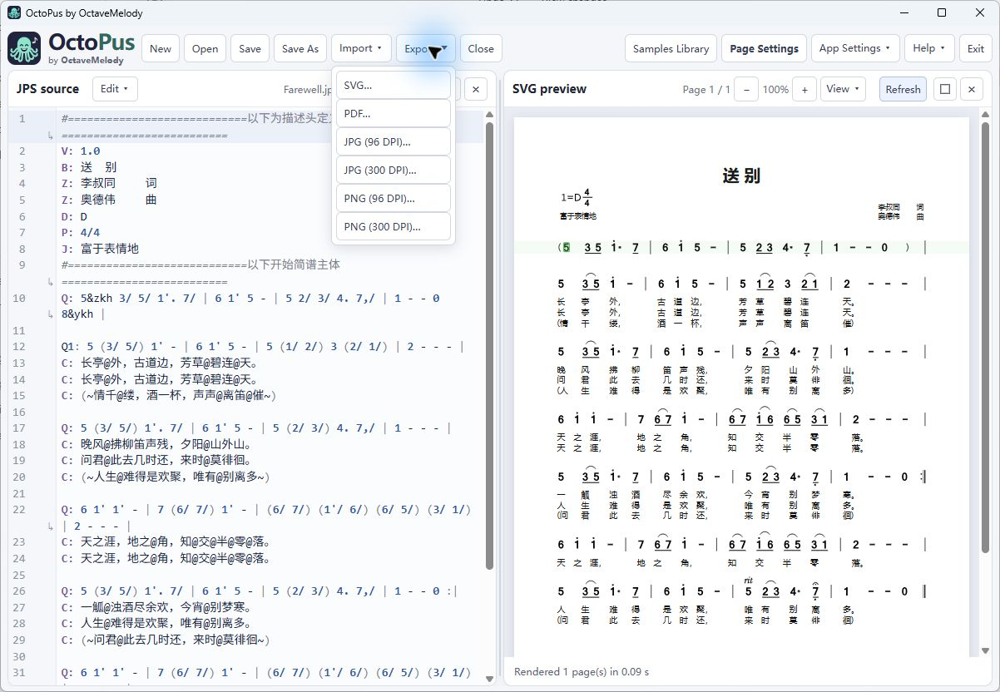

7. Preview, cursor and navigation
The preview updates as source changes. Clicking or moving the source cursor highlights the matching score position and brings that row toward the preview center. Clicking a preview note or lyric selects its source without automatically moving the preview. Direct source clicks/keyboard movement resume following. Only uniquely mapped elements are selectable; some decorative or temporary-voice elements may not have a precise source target.
Use -/+ to zoom, Fit Page for the whole page and Fit Width for width-based reading. Page arrows or View menu items navigate rendered pages. Refresh requests a new render. Click diagnostics below the preview to jump to the related source. A previous preview can remain visible during rendering; wait for completion and resolve relevant warnings before exporting.
Focus the preview with Tab to use Page Up / Page Down for navigation and Ctrl+wheel for zoom. The status line reports completed pages and elapsed rendering time; during a multipage render it shows progress.
8. Original images/PDFs and transcription
Choose Import → JPG / PNG / PDF… or drop one PNG, JPG/JPEG or PDF into Original Image/PDF. An existing reference prompts Replace Reference or Cancel. Import is blocked while another import, replacement decision, recovery, save, transcription or conflicting dialog is active. Unsupported/multiple dropped files are rejected without import.

Drag the displayed original to pan; use fit, zoom and Rotate 90°. Rotation changes the viewing orientation, not the original file. A PDF has page navigation. Closing the pane hides it and retains the managed reference; select a Transcription layout to reopen it. Input limits include 100 MiB per image/PDF, at most 200 PDF/reference pages and 40 million pixels per decoded image/PDF page. Damaged, encrypted or unsupported files may fail; reduce the input if the program reports a size or page-limit error.
- Transcribe New: generates a provisional new score. Handle any unsaved-score prompt before replacing the working score.
- Transcribe Append: adds recognized music to the current source, using a page break boundary when needed and omitting repeated draft headers for a nonempty score. Undo can reverse the insertion.
- A PDF is transcribed as a document, not only its displayed page. Review the warnings and each page against the original; collapse warnings when you need editing space.
- Correct uncertain recognition manually. Check octave dots, beams, dotted durations, accidentals, grace notes, slurs, endings and lyrics before saving/exporting.

Before inserting into a nonempty score, Append compares each nonblank explicit uppercase D/P/J draft header with the current score. It blocks a definite mismatch or a header it cannot verify, such as a missing destination value or an ambiguous D/P/J instruction inside music, and suggests Transcribe New. It does not infer omitted draft headers or add default key, meter or tempo values. Matching headers do not prove musical compatibility; review the draft against the original.
OCR model
The bundled Default profile uses PP-OCRv6 Small text detection and recognition models with the shared PP-OCRv4 Mobile orientation classifier. It supports English and Chinese and works offline. Transcribe New and Transcribe Append use this same profile for every crop and PDF page. The profile does not change or become part of the saved JPS score.
Review an uncertain draft
For PDFs, transcription shows page progress and a Cancel transcription button. Cancel stops the task, keeps your current score and discards the unfinished draft. Afterward, expand the review list and choose a finding. The original pane opens the matching page, zooms toward the reported region and outlines it in amber. If a finding maps to one source note, that note is selected in the editor. Low digit agreement adds a warning mark to the draft; this score compares classifier results and is not a calibrated probability or a guarantee of correctness.

Editing the source clears obsolete note-range marks, but scan regions remain available for review. Old findings cannot select references that have been renamed, removed or replaced. A one-time hint explains how to drop in a scan or PDF and create a draft; dismiss it to clear the workspace.
OctoPus conservatively filters repeated headers, footers and isolated page numbers outside music and lyric bands. Review findings can flag continuation-page meter changes, key or tempo changes that need manual handling, unresolved score instructions, and clear measure or voice duration mismatches. Lyric findings point out differences between accepted words or slots and the rendered draft; review them manually because they neither rewrite lyrics nor verify OCR. Checks against the rendered draft compare note count, row and spacing, but none of these checks rewrites uncertain notes or proves that a draft is complete or musically correct. Compare the notation with the original before accepting it.
9. Modes, layouts and focus
| Mode/layout | Use |
|---|---|
| Normal N1 | JPS source and preview side by side. |
| Normal N2 | JPS source and preview stacked. |
| Transcription T1 | Original, source and preview in three columns. |
| Transcription T2 | Original and preview above the source editor. |
Drag the divider between panels to resize them. Vertical dividers move left/right; horizontal dividers move up/down. In T1, each divider resizes only its two neighboring panes. Each layout remembers its sizes. To resize with a keyboard, focus a divider with Tab and use the matching arrow keys (Shift for a larger step); Home/End select the smallest/largest size. Minimum sizes keep every panel accessible. Use a panel’s Maximize control to expand it and Restore to return to the layout. Close hides a panel while preserving its content. Choosing a layout in App Settings reopens its panels; if all panels are closed, use that menu to resume. Controls adapt as the available width changes. F11 toggles the window maximized state; the toolbar has no separate Maximize button.

10. Page settings and fonts
Page Settings groups paper (A4/A5), margins and body offset; title/lyric fonts and note style; title/subtitle/lyric sizes; music-to-lyric, lyric-to-lyric, lyric-to-music and voice spacing; and slur shape (Automatic, Arc, Flat top). Sizes/margins are renderer units, not millimeters. Apply updates the score while keeping the dialog open; OK applies and closes; Cancel discards unapplied draft changes. Already applied changes are not reverted by Cancel. Save the score to retain changes.

| Role | Windows installed family | macOS installed family | Linux bundled family |
|---|---|---|---|
| HeiTi-1 (default) | Microsoft YaHei | PingFang SC | MiSans Regular |
| HeiTi-2 | SimHei | Heiti SC | LXGW Neo XiHei |
| SongTi | SimSun | Songti SC | SimZhiSong |
| KaiTi | KaiTi | Kaiti SC | LXGW WenKai Regular |
| FangSong | FangSong | STFangsong | Zhuque Fangsong Regular |
App Settings selects the interface language and UI font; see section 4 for the first-use defaults. These fonts affect controls and menus only. Page Settings selects score font roles and styles, while exports use the same roles. On Windows and macOS, OctoPus uses the preferred installed family for each role. If it is missing, OctoPus can use a compatible installed substitute. Open Help → Fonts for official installation instructions or choose Check again. Windows links to Microsoft's supplemental-font guidance; macOS links to Apple Font Book. You can keep using installed substitutes without installing more fonts, though a character may be unavailable if none of the installed fonts contains it. Windows and macOS desktop packages do not include the 13-face score-font set. The Linux AppImage uses the verified font set shipped with the application. Noto fonts provide Linux glyph fallbacks, but they do not cover every Unicode character; Latin Arial-family text uses Liberation Sans. Note styles are Regular, Italic and Bold, and saved HeiTi maps to HeiTi-2. Font substitution can change spacing. Microsoft fonts are not redistributed. MiSans has a separate Xiaomi license; other Linux score-font notices use OFL and IPA licenses. The offline manual includes only small Noto Sans SC subsets. Microsoft font installation instructions · Apple Font Book instructions.
Image and scanned-PDF transcription uses the bundled Default OCR profile with RapidOCR + ONNX locally. Select Transcribe in the original-image/PDF panel to create a reviewable JPS draft. Review the generated source and any issue markers before saving or using the draft.
11. Export and Windows portable use
Choose Export, select SVG, PDF, PNG or JPG (96 or 300 DPI), and choose where to save the files. PDF creates one multipage document; SVG, PNG and JPG create separate page files. Use 300 DPI for print-quality raster output. Save the JPS as your editable master before sharing exports. PDF embeds fonts, PNG preserves lossless pixels, JPEG compresses pixels and SVG keeps vector content. External SVG viewers still need matching text fonts, so inspect exports in the viewer you plan to use. The separate Python ReportLab PDF path cannot embed CFF-outline system fonts and uses the role fallback; this limitation does not apply to native desktop export.

For the Windows portable ZIP, keep the extracted folder together, including engine, examples and docs, and run octopus.exe from that folder. Its worker is bundled, so no separate Python is required. Windows still requires WebView2.
Batch export from the Python command line
For a folder of JPS sources, the Python command line can produce one combined PDF or separate files per score. Files are processed in sorted path order; recursive output keeps subfolders. Existing output files are never overwritten. A failed source is reported while other valid sources continue; review the exit status and printed summary.
uv run --locked octopus batch-export /path/to/scores --out combined.pdf
uv run --locked octopus batch-export /path/to/scores --out-dir exported --format pdf --recursive
uv run --locked octopus batch-export /path/to/scores --out-dir images --format png --dpi 300These commands use the Python installation described in ENVIRONMENT.md. They are not arguments to the portable desktop launcher.
12. Keyboard and Help
| Shortcut | Action |
|---|---|
| Ctrl/Cmd+N | New score |
| Ctrl/Cmd+O | Open score |
| Ctrl/Cmd+S / Shift+S | Save / Save As |
| Ctrl/Cmd+Z | Undo |
| Ctrl/Cmd+Y or Shift+Z | Redo |
| Ctrl/Cmd+X / C / V / A | Cut / Copy / Paste / Select All in the editor |
| Ctrl/Cmd+F | Editor search |
| Ctrl+H (Windows/Linux), Cmd+Option+F (macOS) | Replace in editor |
| Page Up / Page Down; Ctrl+wheel | Navigate / zoom the focused preview |
| F11 | Toggle window maximization |
| Arrow / Home / End / Escape | Navigate menus; Escape dismisses. |
Some shortcuts are inactive while a modal dialog is open or a form control has focus. Help includes Quick Start, User Manual, Report Issues, Submit Requests, Check for Update and About OctoPus. Quick Start and User Manual open in the current interface language; Download PDF opens the native save dialog in the desktop app and downloads the file in a browser. Report Issues opens the project issue page, and Submit Requests opens its pull-request page. Check for Update compares the latest stable GitHub release and reports unavailable information, unfamiliar tags and network errors separately. It does not install updates. About and the logo link to the project home.
About. The dialog shows the manually assigned SemVer version, the number of commits in OctoPus product history and the short SHA of the product commit used for the build. It also displays “OctoPus: Oct(Octave) + Pus (JianPu) = The ultimate numbered notation editor.” Acknowledgments name Tomato JianPu for the adopted JPS format and rendering-compatibility goal, RapidOCR (Apache-2.0), ONNX Runtime (MIT), and the authors of the Linux score-font set and offline-manual Noto Sans SC subsets. The score-font set includes MiSans, LXGW Neo XiHei, SimZhiSong, LXGW WenKai, Zhuque Fangsong, Noto Sans SC, Noto Serif SC and Liberation Sans. Windows and macOS desktop builds use system fonts instead of these bundled score fonts. OctoPus is released under the GNU General Public License, version 3. The software is free of charge; the author provides no warranty and accepts no liability for direct or indirect losses arising from its use. Third-party licenses for included assets are bundled. Planned features are listed in section 2.